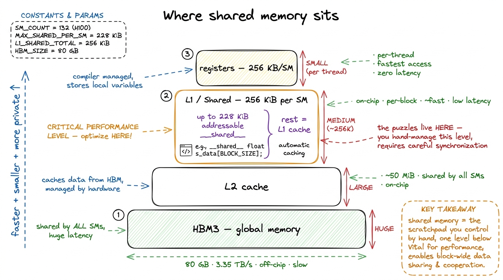
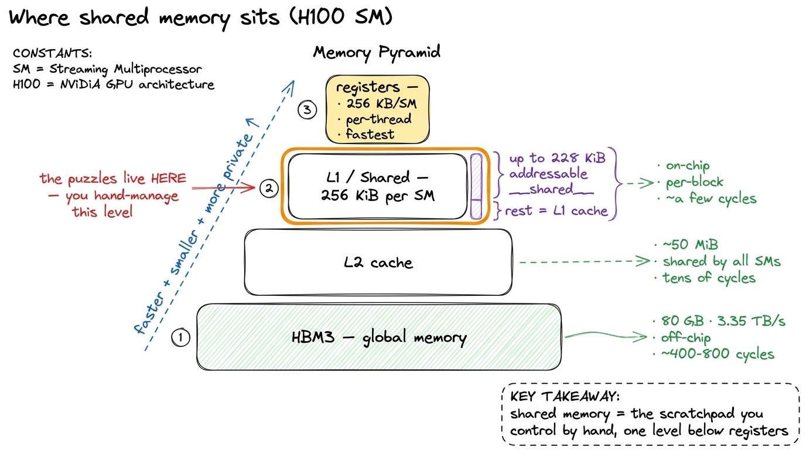
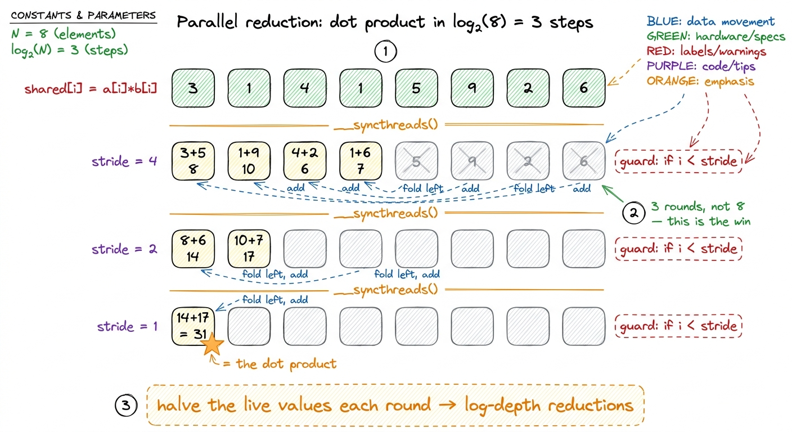
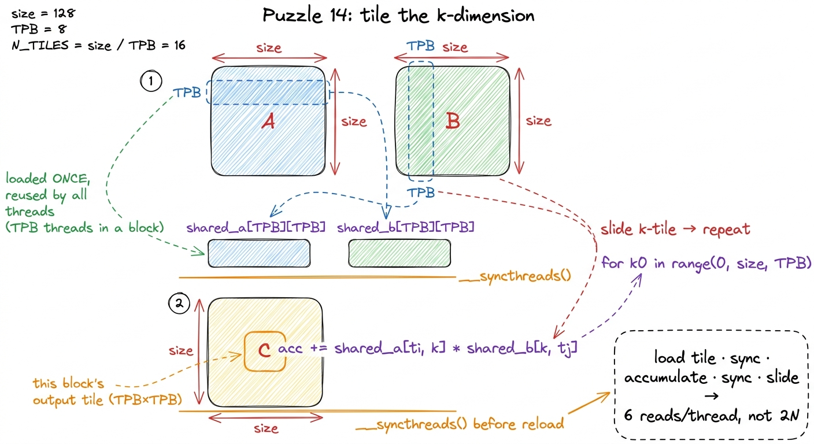

GPU Puzzles, walkthrough II PRACTICE
In the first walkthrough every puzzle had the same shape: one thread does one thing, reads its own input, writes its own output, and never talks to anyone. That is the easy half of the CUDA programming model — embarrassingly parallel work where the only skills you need are indexing arithmetic and a bounds guard. This second walkthrough is where the model gets interesting, because puzzles 8 through 14 of Sasha Rush's GPU-Puzzles all break that isolation. Threads have to cooperate: stage data in shared memory, agree on a barrier, and combine partial results into one. Every serious kernel on this site — including all ten rungs of the GEMM ladder — is built from these three moves, so it is worth doing them by hand once, on toy sizes, where you can see every element.
The puzzles run on a tiny simulator, not real silicon, so there are no benchmark numbers here. The payoff is the mental model: by the end you read __shared__ and __syncthreads() the way you read a for-loop.
Puzzle 8 — Shared: the first barrier
The Shared puzzle is deceptively small — add 10 to an 8-element vector, one block, TPB = 8 threads — but it is the first one that forces you to touch shared memory and a barrier even though the math does not need them. That is the point. It is a finger exercise for the sync pattern you will reuse forever.
Shared memory is a small, fast, on-chip scratchpad that every thread in a block can read and write, and that no other block can see. On an H100 the shared-memory pool and the L1 cache share a 256 KiB budget per Streaming Multiprocessor (SM), of which up to 228 KiB can be carved out as addressable shared memory.1 That 228 KiB is a per-block opt-in, not the default. You request it at launch with cudaFuncSetAttribute(..., cudaFuncAttributeMaxDynamicSharedMemorySize, ...); the classic no-opt-in ceiling is 48 KiB per block. And "228" is itself rounded — the exact usable figure depends on the driver's L1 carve-out granularity. In the puzzle simulator it is just a small array you declare inside the kernel.

figure rendering · The memory hierarchy: shared memory is the fast, per-block level the pThe canonical solution is three lines with a barrier wedged in the middle:
def call(out, a) -> None:
shared = cuda.shared.array(TPB, numba.float32)
i = cuda.blockIdx.x * cuda.blockDim.x + cuda.threadIdx.x
local_i = cuda.threadIdx.x
if i < a.size:
shared[local_i] = a[i] # 1. every thread loads its element
cuda.syncthreads() # 2. barrier: wait for ALL loads
if i < a.size:
out[i] = shared[local_i] + 10 # 3. now safe to read sharedcuda.syncthreads() is the whole lesson. It is a barrier: no thread in the block advances past it until every thread in the block has arrived. Without it, thread 5 might read shared[5] before some slower thread has written it, and you would read stale garbage. In this specific puzzle each thread only ever reads the slot it wrote, so the barrier is technically unnecessary — but the puzzle makes you write it anyway, because the moment threads read each other's slots (which starts one puzzle later) it becomes mandatory.

figure rendering · Shared memory is a per-block scratchpad; the barrier is what makes reaPuzzles 9 & 11 — Pooling and convolution: the halo pattern
Pooling asks for a sliding sum of the last 3 elements; 1D convolution asks you to slide a small kernel b (length CONV) across a. They are the same puzzle wearing different weights, and both come with a tight budget written into the problem: pooling allows just 1 global read and 1 global write per thread, and convolution allows 2 global reads and 1 global write per thread (the second read is the kernel b). That constraint is the lesson. It is impossible to hit if every thread independently re-reads its whole window from global memory, because neighbouring windows overlap heavily — thread i and thread i+1 share almost all their inputs.
The fix is the pattern that shows up in every stencil, every convolution, every attention tile: load the block's slice of input into shared memory once, sync, then let each thread compute its window entirely out of shared memory. The overlap between windows becomes free reuse instead of repeated HBM traffic. The one subtlety is the halo — a window near the right edge of the block reaches past the block's own slice, so you load a few extra elements (CONV - 1 of them) past the tile boundary.2 The halo is exactly why real convolution kernels load a tile of width TPB + CONV - 1 rather than TPB. The extra threads that fetch the halo have no output of their own; they exist purely to feed their neighbours. This asymmetry — more loaders than computers — reappears in the GEMM epilogue and in flash-attention's K/V staging.
def call(out, a, b) -> None:
shared_a = cuda.shared.array(TPB + CONV - 1, numba.float32)
shared_b = cuda.shared.array(CONV, numba.float32)
i = cuda.blockIdx.x * cuda.blockDim.x + cuda.threadIdx.x
local_i = cuda.threadIdx.x
if i < a.size:
shared_a[local_i] = a[i]
if local_i < CONV: # a few threads fetch the halo + kernel
shared_a[TPB + local_i] = a[i + TPB] if i + TPB < a.size else 0
shared_b[local_i] = b[local_i]
cuda.syncthreads()
if i < out.size:
acc = 0.0
for j in range(CONV):
acc += shared_a[local_i + j] * shared_b[j] # window from shared only
out[i] = accEvery thread now touches global memory exactly twice (its own a[i], plus the shared load), then does its whole dot-product against on-chip data. Count the reads and you are inside budget. This is a scaled-down GEMM inner loop: stage a tile, sync, reuse it across many outputs. Hold that thought — it is literally kernel 3 of the GEMM ladder, where the tile is a square of A and B instead of a strip of a.
Puzzles 10, 12, 13 — Dot product, prefix sum, axis sum: the reduction
Now the threads stop being independent for good. A reduction combines many values into one — a sum, a max, a dot product — and the naive serial version (one thread adds up all 8 numbers) throws away every other thread. The parallel answer is the tree reduction: at each step, half the surviving threads add in a partner's value, so the number of live values halves every round and you finish in log₂(n) steps instead of n.
For the 8-element Dot Product puzzle, that is 3 steps instead of 8:
def call(out, a, b) -> None:
shared = cuda.shared.array(TPB, numba.float32)
i = cuda.threadIdx.x
shared[i] = a[i] * b[i] # elementwise product into shared
cuda.syncthreads()
stride = TPB // 2
while stride > 0:
if i < stride:
shared[i] += shared[i + stride] # add partner `stride` away
cuda.syncthreads() # barrier EVERY round
stride //= 2
if i == 0:
out[0] = shared[0] # thread 0 writes the answerWalk the strides for TPB = 8: stride = 4 folds shared[0..3] += shared[4..7], stride = 2 folds the survivors into shared[0..1], stride = 1 folds those into shared[0]. Three rounds, log₂(8) = 3, and the total is in slot 0. Two things are non-negotiable. First, the barrier goes inside the loop, once per round — every level reads what the previous level wrote, so a missing syncthreads() here is a genuine race, not a formality like it was in puzzle 8. Second, the if i < stride guard is what keeps this correct as threads drop out; the dropped threads still have to reach the barrier, which is why the guard wraps only the add, not the sync.3 On real hardware this exact tree has a famous flaw: shared[i] += shared[i + stride] makes adjacent threads access strided addresses, causing shared-memory bank conflicts on early rounds. Production reductions reverse the direction (start with the largest stride and shrink) or reduce in registers via warp shuffles (__shfl_down_sync) to avoid shared memory entirely for the last 32 lanes. The puzzle version is the clear version, not the fast one.
Prefix Sum (puzzle 12) is the same tree in reverse — instead of collapsing to one value it propagates partial sums outward — and Axis Sum (puzzle 13) is just this reduction run once per row, using cuda.blockIdx.y to pick the row so each block owns one output. Once you see the fold, all three are the same skeleton: elementwise into shared → tree of (guarded add + barrier) → one thread writes out.

figure rendering · The tree reduction: halve the number of live values every round, one bPuzzle 14 — Matmul: all three moves at once
The final puzzle is the whole course in miniature. Multiply two square matrices with TPB = 3 tiles, and in the hard variant the matrices are larger than one block, so a single tile of shared memory cannot hold a full row of A or column of B. The problem statement even hands you the target: 6 global reads per thread. You cannot hit that by reading a whole row and column per output element — that is the naive kernel, and it is exactly the low-single-digit-percent-of-cuBLAS baseline the GEMM ladder opens with.
The efficient answer fuses everything from this walkthrough. Each block owns one TPB × TPB tile of the output C. It walks along the shared k dimension one tile at a time: load a TPB × TPB square of A and of B into two shared arrays, sync, accumulate the partial dot products for the whole output tile out of shared memory, sync again, slide to the next k-tile. The barrier is doubled here — one after loading so no thread computes on a half-filled tile, one after computing so no thread overwrites the tile while a straggler is still reading it.
def call(out, a, b, size) -> None:
shared_a = cuda.shared.array((TPB, TPB), numba.float32)
shared_b = cuda.shared.array((TPB, TPB), numba.float32)
i = cuda.blockIdx.y * cuda.blockDim.y + cuda.threadIdx.y # global row
j = cuda.blockIdx.x * cuda.blockDim.x + cuda.threadIdx.x # global col
ti, tj = cuda.threadIdx.y, cuda.threadIdx.x
acc = 0.0
for k0 in range(0, size, TPB): # slide over k, tile by tile
if i < size and k0 + tj < size:
shared_a[ti, tj] = a[i, k0 + tj]
if j < size and k0 + ti < size:
shared_b[ti, tj] = b[k0 + ti, j]
cuda.syncthreads() # tile fully loaded
for k in range(TPB):
acc += shared_a[ti, k] * shared_b[k, tj]
cuda.syncthreads() # done reading before reload
if i < size and j < size:
out[i, j] = accEvery element of A and B a block needs is now read from global memory once and reused by every thread in the tile, instead of once per output element. That single change — reuse through shared memory — is what turns an intensity of ~1 flop/byte into something the tensor cores can actually feed on. It is the pivot the entire GEMM ladder is built around.4 The puzzle stops here, at a correct tiled kernel. Real GEMM keeps going for nine more rungs: each thread computes a strip then a 2D block of outputs (register tiling), reads become float4 vectorized loads, tile shapes get autotuned, and finally warptiling maps cleanly onto tensor-core wgmma shapes. That climb from naive to the high-90s percent of cuBLAS is the next section — and every rung reuses shared memory, barriers, and reductions exactly as you just wrote them.

figure rendering · Matmul is convolution's halo, the reduction's fold, and the barrier alWhat the second half of the model actually taught
Step back and the seven cooperative puzzles collapse into one idea repeated at three scales. Shared memory turns overlapping reads into on-chip reuse — Pooling, Convolution, and the load phase of Matmul. Barriers make it safe for a thread to read what another thread wrote — the syncthreads() inside every reduction round and around every tile load. Reductions fold many partial results into one in logarithmic depth — Dot Product, Prefix Sum, Axis Sum, and the accumulate phase of Matmul. There is nothing else in the cooperative half of the CUDA model; even Hopper's fanciest machinery is these three ideas with better hardware underneath.5 Hopper adds thread-block clusters and distributed shared memory (DSMEM) so blocks on different SMs can read each other's scratchpads, plus asynchronous TMA bulk copies that overlap the "load tile" step with compute instead of blocking on it. But the shape is unchanged: you are still staging tiles, synchronizing, and reducing — just with the loads hidden behind the math.
That is the honest bridge to the rest of the site. The GPU-Puzzles gave us the grammar on 8-element toys; the GEMM ladder now spends ten kernels turning that grammar into throughput, profiling each rung and letting the bottleneck — not our intuition — pick the next move. If you understood why the barrier goes inside the reduction loop and why the matmul stages a k-tile at a time, you already understand the skeleton of every kernel that follows. Everything from here is making that skeleton fast.